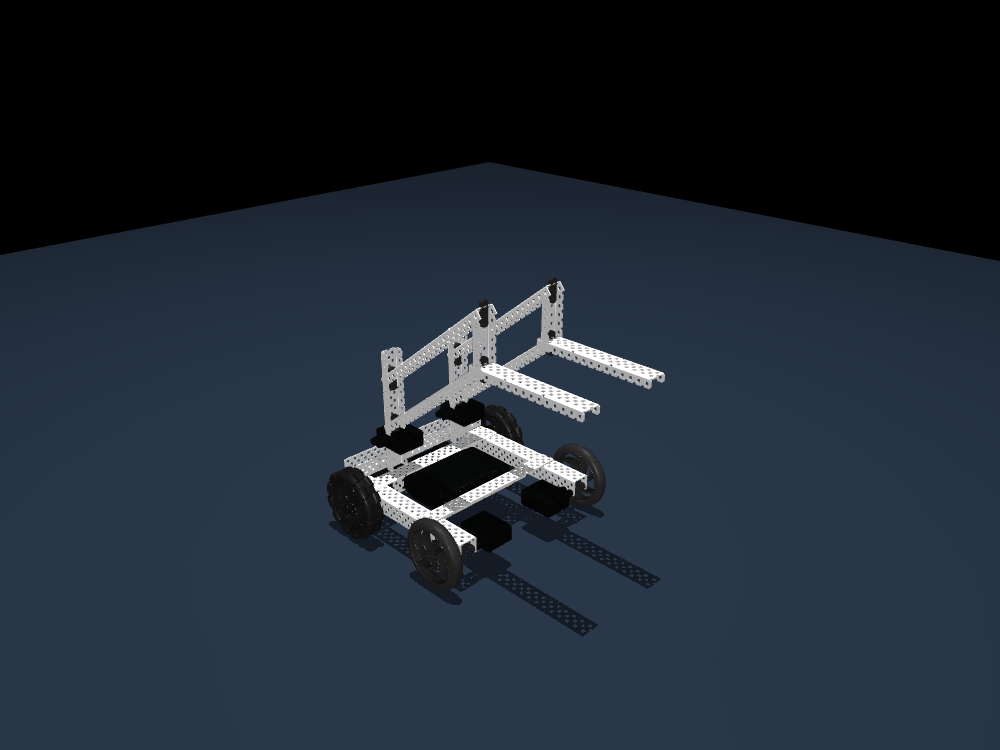
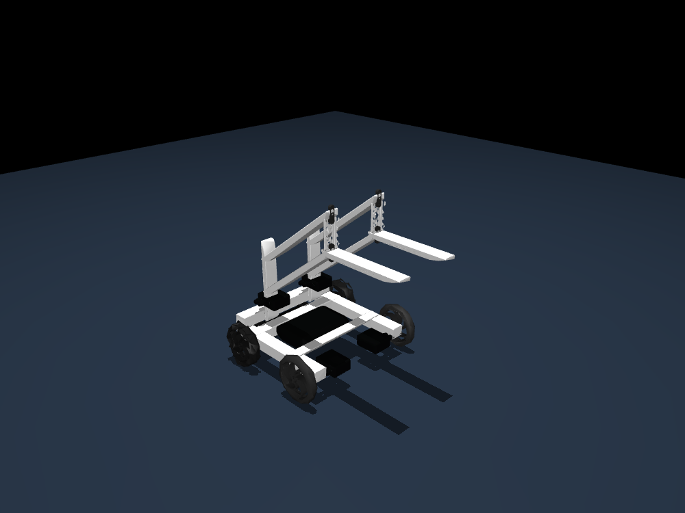
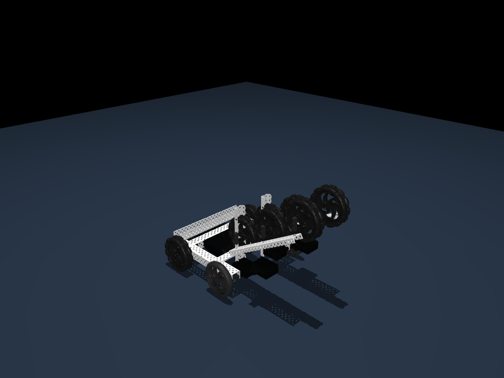
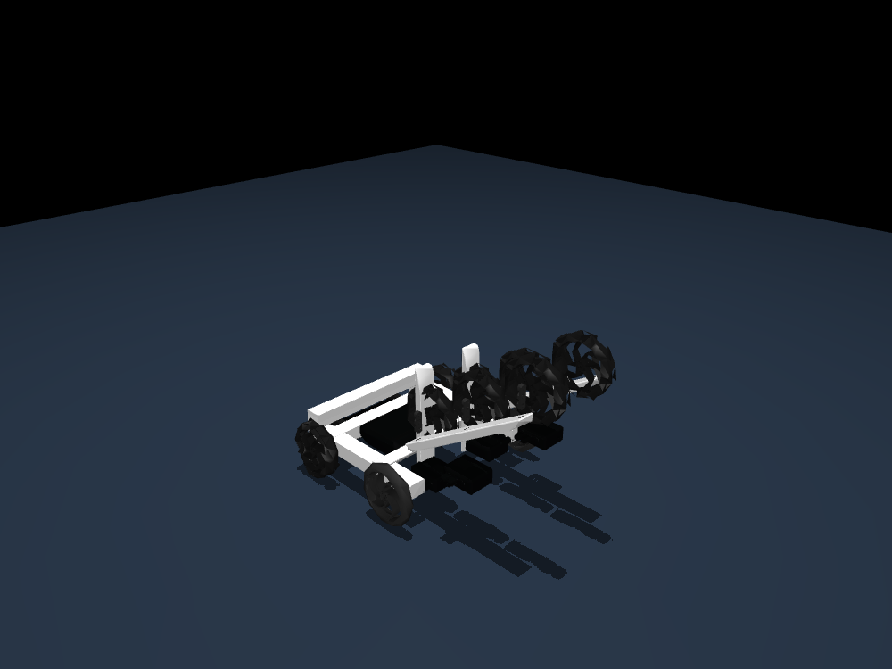
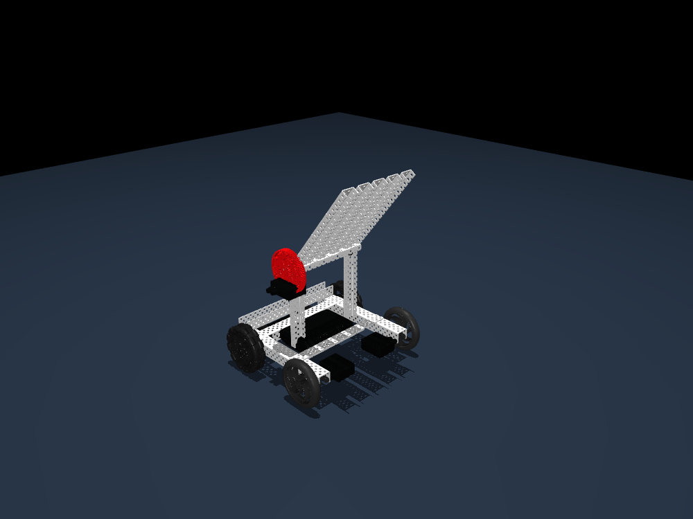
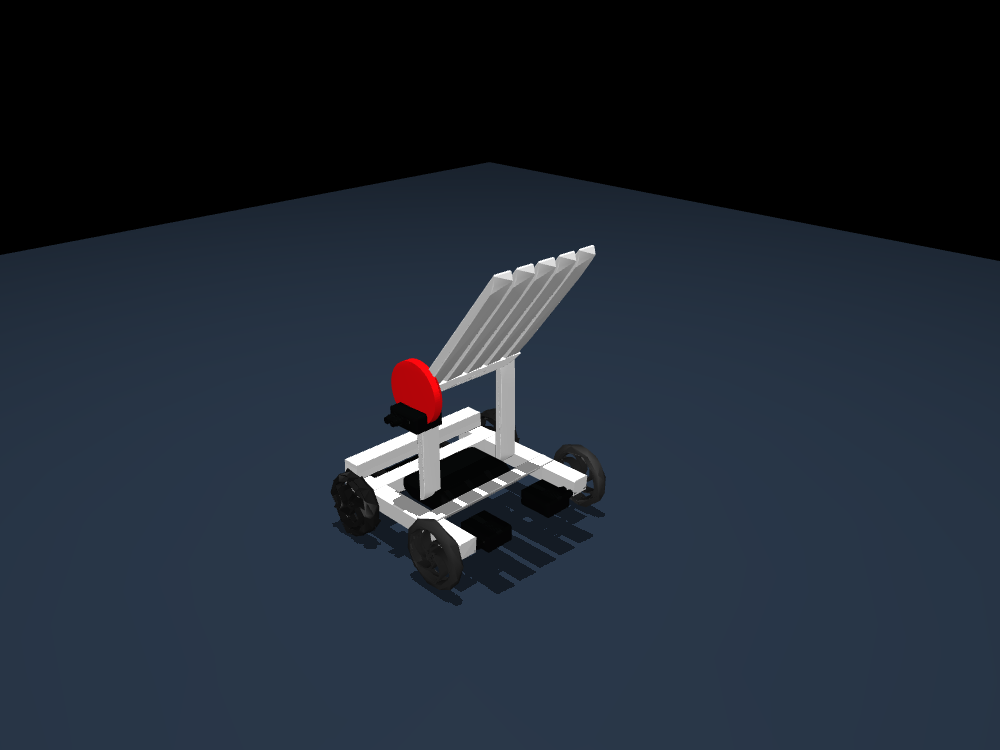
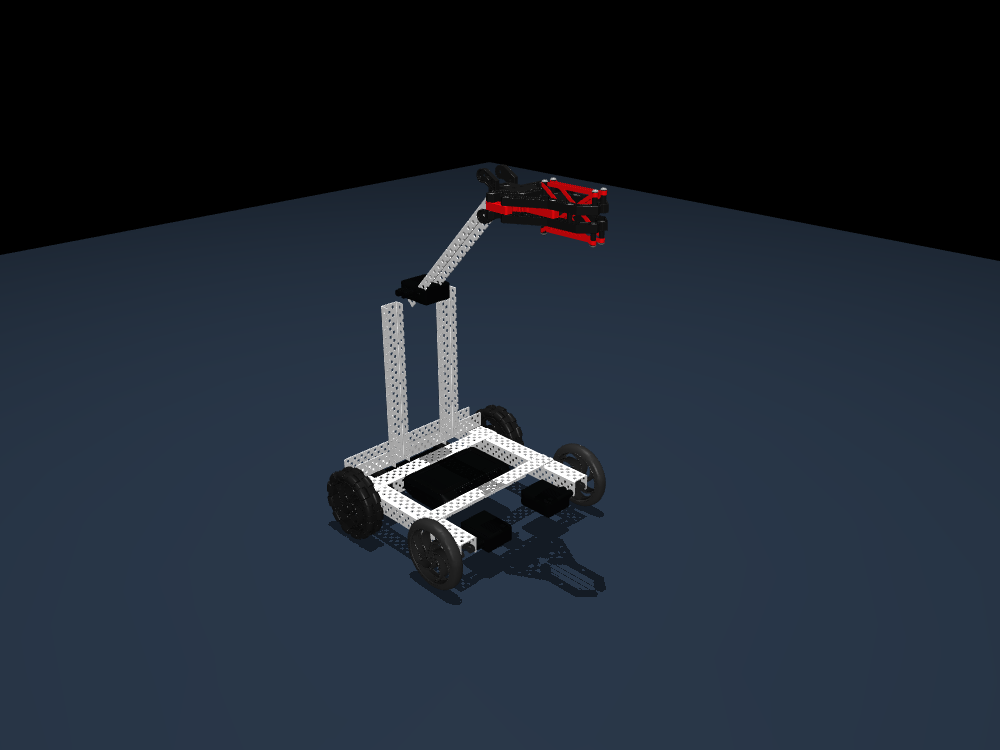
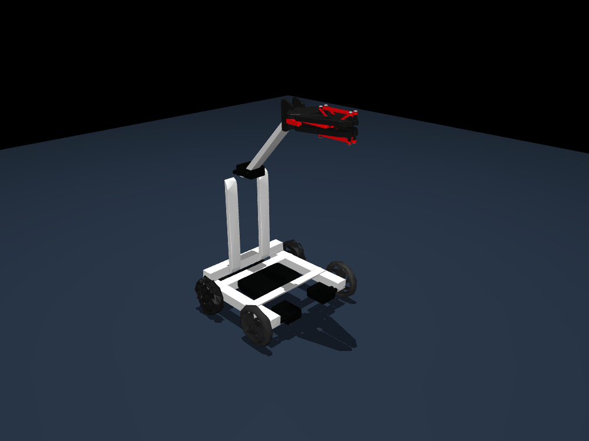

Four different scoring mechanism concepts
Actual OpenAI proposals, compiled through hand-authored layout templates using unscaled source CAD. Same base chassis; different scoring mechanisms. These are static layouts, NOT build-ready or physics-ready robots. Shafts, fastener stacks, transmissions and clearances are not solved; required and rendered BOMs are separate.
All 418 legal-list SKUs are cataloged; CAD coverage is incomplete. No scoring tests or physics steps were run.
Parts catalog · Original AI proposals01 Parallel Fork Elevator
four_bar_fork · Two parallel 276-7285 fork rails approach beneath objects while paired linkage arms preserve an approximately level display pose. An 84T/12T reduction concept distinguishes acquisition by lifting from below rather than gripping or feeding.

Reduced display detail (all hardware retained)

Drive forks beneath objects. → Raise the parallel linkage. → Approach and lower toward the target.
Hypothesis: A level-rising fork pair may present two supported objects at a useful height, but object fit, linkage travel, deflection, and target compatibility remain unevaluated.
Unresolved: The four-bar pivot stack, shaft lengths, bearing alignment, collars, washers, screws, nuts, gear mesh, motor coupling, and chassis supports are not mating-solved; several listed items lack source CAD.; No fork-tip backstop or side retention is defined, so objects could slide during acceleration or when the linkage pose changes.; The 38-degree display is static; linkage interference, achievable range, motor torque, rail deflection, and center-of-mass stability are unknown.; Fork spacing and elevation have not been calibrated to benchmark objects or field-goal openings.
Part placements · Rendered BOM · AI required parts (includes unrendered hardware)02 Inclined Twin-Roller Elevator
roller_feeder · Powered wheels above an inclined channel guide would draw objects from a low entry and advance them upward. Compliant intake wheels and a chain-linked upper roller concept provide continuous feeding rather than lifting a fixed cradle.

CAD coverage gap: The feeder displays available source omni wheels. The AI requests flex-wheel hardware; the visible wheels are layout stand-ins, not a physically equivalent assembly.
Reduced display detail (all hardware retained)

Contact objects with the lower rollers. → Feed them up the inclined guide. → Reverse or advance to release near the target.
Hypothesis: A staged roller path may move objects upward without a separate lift, but compression, traction, guide clearance, feed timing, and discharge direction are unknown.
Unresolved: Roller shafts, bearing locations, collars, screw stacks, motor-to-sprocket coupling, chain length/tension, inclined-frame bracing, and chassis attachment are not mating-solved; most transmission CAD is absent.; The compiler pose does not establish wheel compression against the object, clearance through the channel, or synchronization between rollers.; Side guides, an entry funnel, an anti-rollback feature, and discharge retention are missing, so jamming or unintended ejection is possible.; The 31-degree guide and 101.6 mm spacing have not been calibrated to benchmark objects or field-goal openings.
Part placements · Rendered BOM · AI required parts (includes unrendered hardware)03 Hinged Channel Tip-Bucket
tilting_tray · A broad channel cradle passively scoops objects at chassis height, carries them against a lined back wall, and pivots as a single tray for placement. Its acquisition relies on driving objects into a cradle rather than rollers, forks, or a claw.

Reduced display detail (all hardware retained)

Drive objects into the lowered cradle. → Pivot the loaded tray upward. → Tip the cradle toward the target.
Hypothesis: A wide lined cradle may retain multiple objects until tipped, but loading geometry, release threshold, pivot torque, structural twist, and object trajectories remain unknown.
Unresolved: The hinge axis, shaft support, bearing placement, collars, fasteners, motor mount, gear reduction, hard stops, and chassis bracing are not mating-solved; listed non-CAD components will not be positioned reliably by the layout alone.; The tray lacks resolved side walls, a front retaining lip, and a controlled release gate; the anti-slip liner attachment is also unspecified.; The 52-degree display is static, not a demonstrated dump angle or operating range; gear clearance, required torque, and chassis tipping margin are unknown.; Cradle width, lip height, and discharge position have not been calibrated to benchmark objects or field-goal openings.
Part placements · Rendered BOM · AI required parts (includes unrendered hardware)04 Cantilever Source-Claw Placer
overhead_claw · A raised cantilever arm carries the supplied source claw so objects are acquired by active gripping and then presented from above. A geared arm pivot provides a layout-level lifting concept distinct from under-support, conveying, or dumping.

Reduced display detail (all hardware retained)

Grip an object with the source claw. → Raise and swing the cantilever arm. → Open the claw near the target.
Hypothesis: An overhead gripping approach may offer deliberate single-object placement, but the source claw mapping, grip envelope, arm stiffness, pivot load, and release alignment remain unverified.
Unresolved: The supplied claw subassembly's mapping to 276-2212 is unverified, including its actuator, mounting holes, transmission, shafts, collars, bearings, screws, and required control connection.; The cantilever pivot, high-strength shaft stack, gear mesh, motor coupling, gusset pattern, rear support, and chassis interface are not mating-solved; much of this hardware has no source CAD.; No wrist joint, anti-swing restraint, mechanical stops, or object-retention validation is defined, and claw-arm or claw-chassis interference may occur.; The 47-degree display is static; reach, torque, stability, claw orientation, and compatibility with benchmark field-goal openings have not been calibrated.
Part placements · Rendered BOM · AI required parts (includes unrendered hardware)